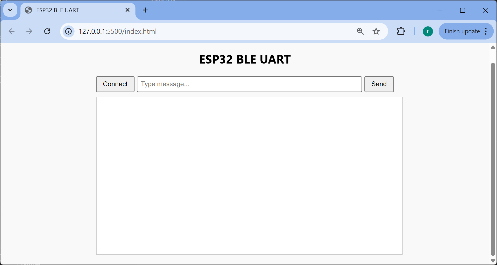
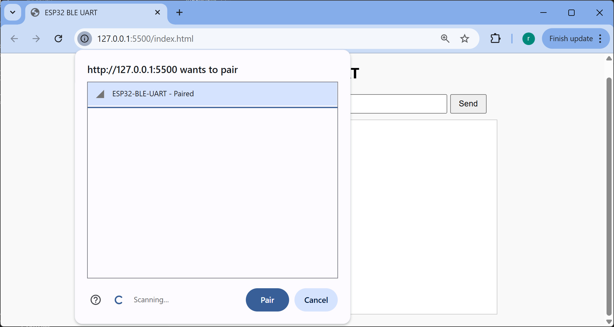
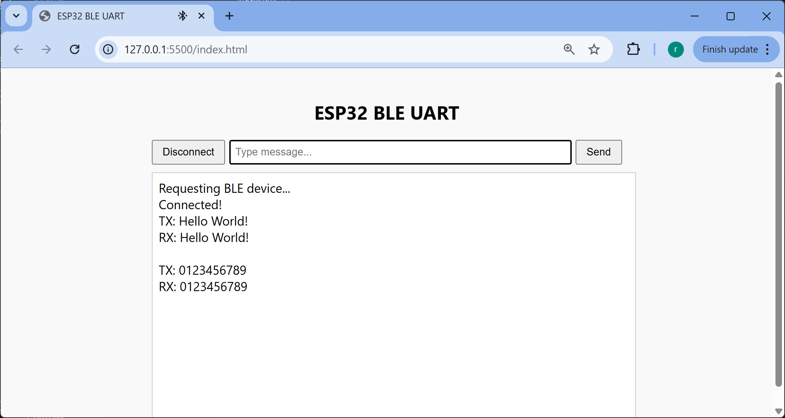

การเขียนโปรแกรม ESP32 เพื่อใช้งาน BLE ด้วยไลบรารี NimBLE-Arduino (ตอนที่ 2)#
▷ แนะนำ NimBLE-Arduino#
บทความนี้นำเสนอตัวอย่างการเขียนโค้ด Arduino สำหรับการใช้งาน Bluetooth LE (BLE) โดยใช้บอร์ดไมโครคอนโทรลเลอร์ ESP32 / ESP32-S3 และใช้ไลบรารี NimBLE-Arduino
⚠ แนะนำให้ผู้อ่านได้ศึกษาและทำความเข้าใจเนื้อหาในบทความ "ตอนที่ 1" ก่อน
▷ BLE UART Service#
ตัวอย่างโค้ดนี้ สาธิตการใช้ ESP32 ให้ทำหน้าที่เป็น BLE UART Bridge โดยใช้ไลบรารี NimBLE + FreeRTOS ในการเขียนโค้ด มีการแยกการทำงานของโปรแกรม ออกเป็นสองทาสก์ (FreeRTOS Task) ซึ่งเชื่อมต่อหรือสื่อสารข้อมูลกันด้วย FreeRTOS Queue เพื่อให้การรับ–ส่งข้อมูลระหว่างวงจร BLE กับวงจร Hardware Serial ภายในชิป ESP32
ตัวอย่างนี้แสดงให้เห็น แนวคิดหลัก เช่น
- การใช้ Nordic UART Service (NUS) เพื่อเลียนแบบพอร์ตอนุกรมโดยใช้การสื่อสารไร้สายแบบ BLE
- การใช้ FreeRTOS Tasks + Queues เช่น การสร้างทาสก์ใหม่ แบ่งงานออกเป็น 3 ทาสก์
- การจัดการรายละเอียดระดับระบบเกี่ยวกับ BLE เช่น การกำหนด BLE Service Characteristics เป็นต้น
ข้อมูลจาก Serial1 เพื่อส่งไปยัง BLE (ESP32 เป็นผู้ส่ง)#
-
เมื่อมีข้อมูลเข้าที่ขา Serial (RX) ทาสก์
serialToBleTaskอ่านข้อมูลมาทีละไบต์ สะสมข้อมูลลง Data Buffer ถ้าข้อมูลเต็มแล้ว หรือ พบว่าได้รับสัญลักษณ์\nหรือ\rหรือ ไม่มีข้อมูลใหม่เข้ามาเกิน 20 ms (timeout) ถ้าเป็นตามเงื่อนไขนี้ ให้นำข้อมูลใส่ลงserialToBleQueue -
ทาสก์
bleNotifyTaskจะคอยดึงข้อมูลจากserialToBleQueueถ้ามี BLE Client เชื่อมต่ออยู่ ก็ให้ส่งข้อมูลออกด้วยวิธี BLE Notification เพื่อแจ้งให้ BLE Client ทราบว่า มีข้อมูลที่ถูกส่งไป
ข้อมูลจาก BLE ไปยัง Serial1 (ESP32 เป็นผู้รับ)#
- เมื่อ BLE Client เขียนข้อมูลเข้ามา
ฟังก์ชัน
RXCallbacks::onWrite()จะทำงาน และเมื่อได้ข้อมูลจาก BLE มาแล้ว จึงส่งข้อมูลเข้าbleToSerialQueue - ทาสก์
bleToSerialTaskจะรอข้อมูลจากbleToSerialQueueถ้ามี ก็เขียนข้อมูลออกทางSerial1 TX
/*
* ESP32 BLE UART Bridge with FreeRTOS (Peripheral)
* Library: NimBLE-Arduino v2.3.6
* Target: ESP32 / ESP32-C3
*/
#include <Arduino.h>
#include <NimBLEDevice.h>
#define LED_PIN (22)
#define LED_ON (LOW)
#define LED_OFF (HIGH)
// Serial1 pins (adjust for your board)
#define SERIAL1_RX 16 // GPIO16
#define SERIAL1_TX 17 // GPIO17
#define SERIAL1_BAUD 115200
// UUIDs for Nordic UART Service (NUS)
static NimBLEUUID UART_SERVICE_UUID("6E400001-B5A3-F393-E0A9-E50E24DCCA9E");
static NimBLEUUID UART_RX_UUID("6E400002-B5A3-F393-E0A9-E50E24DCCA9E"); // Write
static NimBLEUUID UART_TX_UUID("6E400003-B5A3-F393-E0A9-E50E24DCCA9E"); // Notify
// BLE objects
NimBLEServer* pServer = nullptr;
NimBLECharacteristic* pTxCharacteristic = nullptr;
bool deviceConnected = false;
// FreeRTOS queues for data transfer
QueueHandle_t bleToSerialQueue;
QueueHandle_t serialToBleQueue;
// Queue item structure
struct QueueData {
uint8_t data[244];
size_t length;
};
// Task handles
TaskHandle_t serialToBleTaskHandle = NULL;
TaskHandle_t bleToSerialTaskHandle = NULL;
class ServerCallbacks : public NimBLEServerCallbacks {
void onConnect(NimBLEServer* pServer, NimBLEConnInfo& connInfo) {
deviceConnected = true;
Serial.println("BLE: Client connected");
digitalWrite(LED_PIN, LED_ON);
}
void onDisconnect(NimBLEServer* pServer, NimBLEConnInfo& connInfo, int reason) {
deviceConnected = false;
Serial.println("BLE: Client disconnected");
digitalWrite(LED_PIN, LED_OFF);
NimBLEDevice::startAdvertising(); // Restart advertising
}
};
class RXCallbacks : public NimBLECharacteristicCallbacks {
void onWrite(NimBLECharacteristic* pCharacteristic, NimBLEConnInfo& connInfo) {
std::string rxData = pCharacteristic->getValue();
if (rxData.length() > 0 && rxData.length() <= 244) {
// Send to BLE→Serial queue
QueueData queueItem;
queueItem.length = rxData.length();
memcpy(queueItem.data, rxData.data(), queueItem.length);
if (xQueueSend(bleToSerialQueue, &queueItem, 0) == pdTRUE) {
Serial.printf("BLE→Queue: %d bytes\n", queueItem.length);
} else {
Serial.println("BLE→Queue: FULL!");
}
}
}
};
// Task: BLE -> Serial1
void bleToSerialTask(void* parameter) {
QueueData queueItem;
Serial.println( "Task: BLE -> Serial1 started" );
while (true) {
// Wait for data from BLE
if (xQueueReceive(bleToSerialQueue, &queueItem, portMAX_DELAY) == pdTRUE) {
// Write to Serial1
Serial1.write( queueItem.data, queueItem.length );
Serial.printf( "Queue -> Serial1: %d bytes\n", queueItem.length );
}
}
}
// Task: Serial1 -> BLE
void serialToBleTask( void* parameter ) {
QueueData queueItem;
queueItem.length = 0;
unsigned long lastRxTime = 0;
Serial.println("Task: Serial1 -> BLE started");
while (true) {
// Read from Serial1 into buffer
while (Serial1.available() && queueItem.length < 244) {
queueItem.data[queueItem.length++] = Serial1.read();
lastRxTime = millis();
}
// Send conditions: buffer full, newline, or timeout
bool shouldSend = false;
if (queueItem.length >= 244) {
shouldSend = true;
} else if (queueItem.length > 0) {
// Check for newline
if (queueItem.data[queueItem.length - 1] == '\n' ||
queueItem.data[queueItem.length - 1] == '\r') {
shouldSend = true;
}
// Timeout (20ms since last byte)
else if (millis() - lastRxTime > 20) {
shouldSend = true;
}
}
// Send to BLE if connected and ready
if (shouldSend && deviceConnected && queueItem.length > 0) {
if (xQueueSend(serialToBleQueue, &queueItem, 0) == pdTRUE) {
Serial.printf( "Serial1 -> Queue: %d bytes\n", queueItem.length );
queueItem.length = 0; // Reset buffer
} else {
Serial.println( "Serial1 -> Queue: FULL!" );
}
}
vTaskDelay(1 / portTICK_PERIOD_MS); // 1ms delay
}
}
// Task: Process Serial1 -> BLE queue and send notifications
void bleNotifyTask(void* parameter) {
QueueData queueItem;
Serial.println("Task: BLE Notify started");
while (true) {
if (xQueueReceive(serialToBleQueue, &queueItem, portMAX_DELAY) == pdTRUE) {
if (deviceConnected && queueItem.length > 0) {
pTxCharacteristic->setValue(queueItem.data, queueItem.length);
pTxCharacteristic->notify();
Serial.printf("Queue -> BLE: %d bytes\n", queueItem.length);
}
}
}
}
void initBLE() {
NimBLEDevice::init("ESP32-BLE-UART");
NimBLEDevice::setMTU(247); // Max payload size
NimBLEDevice::setPower(ESP_PWR_LVL_P9); // Max TX power (+9dBm)
pServer = NimBLEDevice::createServer();
pServer->setCallbacks(new ServerCallbacks());
NimBLEService* uartService = pServer->createService(UART_SERVICE_UUID);
// TX Characteristic (ESP32 -> BLE Client) - Notify
pTxCharacteristic = uartService->createCharacteristic(
UART_TX_UUID,
NIMBLE_PROPERTY::READ | NIMBLE_PROPERTY::NOTIFY
);
// Add 2902 descriptor for notifications (required for notify)
pTxCharacteristic->createDescriptor("2902");
// RX Characteristic (BLE Client -> ESP32) - Write
NimBLECharacteristic* pRxCharacteristic = uartService->createCharacteristic(
UART_RX_UUID,
NIMBLE_PROPERTY::WRITE | NIMBLE_PROPERTY::WRITE_NR
);
pRxCharacteristic->setCallbacks(new RXCallbacks());
// Start BLE UART Service
uartService->start();
// Configure advertising - CRITICAL for Web Bluetooth
NimBLEAdvertising* pAdvertising = NimBLEDevice::getAdvertising();
// Set advertising data with service UUID (required for Web Bluetooth filters)
NimBLEAdvertisementData advData;
advData.setFlags(0x06); // BR/EDR not supported, LE General Discoverable
advData.setCompleteServices(UART_SERVICE_UUID); // MUST advertise service UUID
advData.setName("ESP32-BLE-UART");
pAdvertising->setAdvertisementData(advData);
// Set scan response data
NimBLEAdvertisementData scanData;
scanData.setName("ESP32-BLE-UART");
pAdvertising->setScanResponseData(scanData);
// Set intervals
pAdvertising->setMinInterval(0x20); // 32 * 0.625ms = 20ms
pAdvertising->setMaxInterval(0x40); // 64 * 0.625ms = 40ms
// Start BLE Advertising
NimBLEDevice::startAdvertising();
Serial.println("BLE: Advertising with UART service UUID");
}
void setup() {
Serial.begin(115200);
delay(100);
Serial.println("\nESP32 BLE-UART Bridge (FreeRTOS)");
// Hardware serial for bridging
Serial1.begin( SERIAL1_BAUD, SERIAL_8N1, SERIAL1_RX, SERIAL1_TX );
Serial.printf( "Serial1: RX=%d, TX=%d, Baud=%d\n",
SERIAL1_RX, SERIAL1_TX, SERIAL1_BAUD );
pinMode(LED_PIN, OUTPUT);
digitalWrite(LED_PIN, LED_OFF);
// Create FreeRTOS queues
bleToSerialQueue = xQueueCreate(10, sizeof(QueueData));
serialToBleQueue = xQueueCreate(10, sizeof(QueueData));
if (bleToSerialQueue == NULL || serialToBleQueue == NULL) {
Serial.println("ERROR: Failed to create queues!");
while (1) delay(1000);
}
initBLE();
Serial.println( "BLE: Advertising started.." );
// Create FreeRTOS tasks
// Task: From BLE to Serial1 (Core 0, lower priority)
xTaskCreatePinnedToCore(
bleToSerialTask,
"BLE-to-Serial",
4096, // Stack size
NULL, // Task Parameters
1, // Task Priority
&bleToSerialTaskHandle,
0 // CPU Core 0
);
// Task: From Serial1 to BLE (Core 1, higher priority)
xTaskCreatePinnedToCore(
serialToBleTask,
"Serial-to-BLE",
4096, // Stack size
NULL, // Task parameters
2, // Task priority
&serialToBleTaskHandle,
1 // CPU Core 1
);
// BLE notify task (Core 0)
xTaskCreatePinnedToCore(
bleNotifyTask,
"BLE-Notify",
4096, // Stack size
NULL, // Task parameters
1, // Task priority
NULL,
0 // CPU Core 0
);
Serial.println("FreeRTOS tasks created...");
}
void loop() {
}
▷ การเชื่อมต่อเพื่อใช้บริการ BLE บนหน้าเว็บด้วย Chrome#
ถัดไปเป็นตัวอย่างโค้ด HTML + JavaScript สาธิตการทำงานของ Web Bluetooth Application ในเบื้องต้น ใช้สำหรับทดสอบและสาธิตการสื่อสาร BLE ระหว่างเว็บเบราว์เซอร์ Google Chrome กับบอร์ด ESP32 ซึ่งทำหน้าที่เป็น BLE UART Server
<!DOCTYPE html>
<html lang="en">
<head>
<meta charset="utf-8">
<title>ESP32 BLE UART</title>
<style>
body { font-family: 'Segoe UI', sans-serif; padding: 20px;
max-width: 600px; margin: auto; background: #f9f9f9; }
h2 { text-align: center; }
#log { width: 100%; height: 300px; overflow-y: auto;
border: 1px solid #ccc; padding: 8px; background: #fff;
white-space: pre-wrap; }
#controls { display: flex; gap: 5px; margin-bottom: 10px; }
#sendLine { flex: 1; padding: 6px; }
button { padding: 6px 12px; cursor: pointer; }
</style>
</head>
<body>
<h2>ESP32 BLE UART</h2>
<div id="controls">
<button id="btnConnect">Connect</button>
<input type="text" id="sendLine" placeholder="Type message..." />
<button id="btnSend">Send</button>
</div>
<div id="log"></div>
<script>
let device, txChar, rxChar;
const UART_SERVICE = '6e400001-b5a3-f393-e0a9-e50e24dcca9e';
const UART_RX = '6e400002-b5a3-f393-e0a9-e50e24dcca9e';
const UART_TX = '6e400003-b5a3-f393-e0a9-e50e24dcca9e';
const log = msg => {
const logDiv = document.getElementById('log');
logDiv.textContent += msg + '\n';
logDiv.scrollTop = logDiv.scrollHeight;
};
const connectDevice = async () => {
try {
log('Requesting BLE device...');
device = await navigator.bluetooth.requestDevice({
filters: [{ services: [UART_SERVICE] }]
});
device.addEventListener('gattserverdisconnected', () => {
log('Device disconnected');
device = txChar = rxChar = null;
document.getElementById('btnConnect').textContent = 'Connect';
});
const server = await device.gatt.connect();
const service = await server.getPrimaryService(UART_SERVICE);
txChar = await service.getCharacteristic(UART_TX);
rxChar = await service.getCharacteristic(UART_RX);
await txChar.startNotifications();
txChar.addEventListener('characteristicvaluechanged', e => {
log('RX: ' + new TextDecoder().decode(e.target.value));
});
log('Connected!');
document.getElementById('btnConnect').textContent = 'Disconnect';
} catch (err) {
log('Error: ' + err);
}
};
document.getElementById('btnConnect').onclick = () => {
if (!device) connectDevice();
else device.gatt.disconnect();
};
document.getElementById('btnSend').onclick = async () => {
const input = document.getElementById('sendLine');
const text = input.value.trim();
if (rxChar && text) {
await rxChar.writeValue(new TextEncoder().encode(text + '\n'));
log('TX: ' + text);
input.value = '';
}
};
// Optional: send on Enter key
document.getElementById('sendLine').addEventListener('keydown', e => {
if (e.key === 'Enter') document.getElementById('btnSend').click();
});
</script>
</body>
</html>
 
รูป: การเชื่อมต่อกับอุปกรณ์ ESP32 ด้วยเบราว์เซอร์ Chrome โดยเปิดใช้งาน Web Bluetooth

รูป: การทดสอบพิมพ์ข้อความจาก Chrome เพื่อส่งไปยังบอร์ด ESP32 โดยใช้บริการ BLE-UART
เมื่อบอร์ด ESP32 ได้รับข้อความ ก็จะส่งข้อความที่ได้รับนั้นกลับมา ดังนั้นจึงเป็นการทดสอบรับส่งข้อมูลในลักษณะที่เรียกว่า Serial Loopback (ให้สายไฟ Jumper Wire เชื่อมต่อขา Tx/GPIO-17 กับ Rx/GPIO-16 ของบอร์ด ESP32)
ตัวอย่างการนำไปประยุกต์ใช้งาน เช่น การเชื่อมต่อบอร์ด ESP32 กับอุปกรณ์อื่นที่สื่อสารข้อมูลด้วย Serial / UART (3.3V logic level) และควบคุมหรือรับส่งข้อมูลผ่าน Web App บน Chrome (Web Bluetooth) ได้
▷ กล่าวสรุป#
บทความนี้แนะนำการใช้งาน BLE (Bluetooth Low Energy) บนบอร์ด ESP32 / ESP32-S3 / ESP32-C3 ผ่านไลบรารี NimBLE-Arduino โดยใช้ตัวอย่างโค้ดสาธิตการทำงานในรูปแบบ BLE-UART Bridge มีการสร้างทาสก์ด้วย FreeRTOS แบ่งงานย่อย และให้ทำงานร่วมกัน เพื่อสื่อสารข้อมูลกับ BLE Client ทำให้สามารถรับส่งข้อมูลระหว่าง BLE กับ Hardware Serial
บทความที่เกี่ยวข้อง
- ตัวอย่างการเขียนโปรแกรมด้วย Arduino สำหรับใช้งาน ESP32 - Bluetooth LE
- แนะนำการใช้งาน Zephyr RTOS แบบ CLI: ทดลองใช้งาน Micro:bit v2 BLE
This work is licensed under a Creative Commons Attribution-ShareAlike 4.0 International License.
Created: 2026-01-21 | Last Updated: 2026-01-21